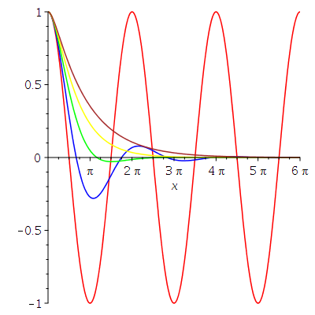
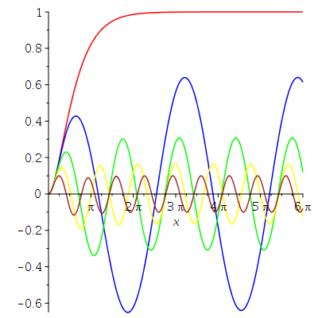
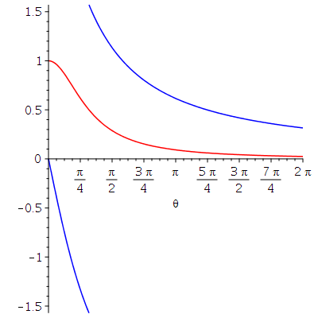
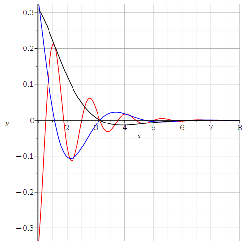

In this document, we introduce some of the Maple functions to solve and draw solutions of ODE of order higher than one; more precisely, we consider linear second order ODE with constant coefficients. We assume that the reader is familiar with the material presented in the document .
Consider the following second order homogeneous linear ODE.
> eq1 := diff(y(x),x$2)-2*diff(y(x),x)+y(x)=0;\[ eq1 := \frac{\text{d}^2}{\text{d}x^2} y(x) - 2 \frac{\text{d}}{\text{d}x} y(x) + y(x) = 0 \]
The reader has probably learned in an introductory course on ODE that the general solution of this ODE is of the form \(y = a_1 y_1 + a_2 y_2\), where \(a_1\) and \(a_2\) are two arbitrary constants, and \(y_1\) and \(y_2\) are two linearly independent solutions of the ODE. If we use Maple to solve the ODE given by eq1, then we get the following result.
> dsolve(eq1,y(x));\[ y(x) = \_C1 e^x + \_C2 e^x x \]
Maple seems to have passed its introductory ODE course.
Consider the following second order non-homogeneous linear ODE.
> eq2 := diff(y(x),x$2)-2*diff(y(x),x)+y(x) = exp(x);\[ eq2 := \frac{\text{d}^2}{\text{d}x^2} y(x) - 2 \frac{\text{d}}{\text{d}x} y(x) + y(x) = e^x \]
The general solution of such an ODE is of the form \(y = y_g + y_p\) where \(y_g\) is the general solution of the associated homogeneous ODE and \(y_p\) is any particular solution.
> dsolve(eq2,y(x));\[ y(x) = e^x \_C2 + e^x x \_C1 + \frac{x^2 e^x}{2} \]
We can check that \(\displaystyle x^2 e^x/2\) is a particular solution of the ODE given by eq2.
> eval(subs(y(x)=x^2*exp(x)/2,eq2));\[ e^x = e^x \]
Note: Two functions are linearly independent if we can not write one as a multiple of the other. To determine if two solutions \(y_1\) and \(y_2\) of a linear homogeneous ODE of order two with constant coefficients are linearly independent, we compute the determinant of the matrix
\[ \begin{pmatrix} y_1(x) & y_2(x) \\ y_1'(x) & y_2'(x) \end{pmatrix} \]This matrix is called the Wronskian of the two solutions. If this determinant is different than zero at one point (i.e. for one value of \(x\)), then the two solutions are linearly independent. If this determinant is zero at one point, then they are dependent.
WARNING: If the determinant of the Wronskian of two solutions of a linear homogeneous ODE of order two with constant coefficients is non-zero at one point, then it is non-zero at all points in the domain of the two solutions. Equivalently, if the determinant of the Wronskian of two solutions is zero at one point, then it is zero at all points in the domain of the two solutions. This is not true for two arbitrary functions. We cannot conclude that two arbitrary functions are linearly independent because the determinant of their Wronskian is non-zero at only one point.
We verify that the two solutions \(\displaystyle e^x\) and \(\displaystyle x e^x\) of the ODE given by eq1 are linearly independent.
> with(VectorCalculus): with(LinearAlgebra): Determinant(Wronskian([exp(x), x*exp(x)], x))\[ (e^x)^2 \]
Since \(\displaystyle e^{2x}\) is different than \(0\) at one point, and so at all points, the two solutions are linearly independent.
Example: Consider the following ODE.
> eq3 := diff(y(x),x$2)-4*diff(y(x),x)+13*y(x)=0;\[ eq3 := \frac{\text{d}^2}{\text{d}x^2} y(x) - 4 \frac{\text{d}}{\text{d}x} y(x) + 13 y(x) = 0 \]
Its solution is given by the following command.
> dsolve(eq3,y(x));\[ y(x) = \_C1 e^{2x} \sin(3x)+ \_C2 e^{2x} \cos(3x) \]
Consider the homogeneous ODE
xo\[ a y''(x) + b y'(x) + c y(x) = 0 \]where \(a,b\) and \(c\) are constants. If we suppose that a solution is of the form \(\displaystyle e^{\lambda x}\) for some constant \(\lambda\) and substitute this expression into the ODE, then we get \(\displaystyle a \lambda^2 + b \lambda + c = 0 \) after dividing by \(\displaystyle e^{\lambda x}\). The polynomial \(\displaystyle p(\lambda) = a \lambda^2 + b \lambda + c\) is called the characteristic polynomial associated to the ODE. The general solution of the ODE is determined by the roots of this polynomial.
If \(\lambda_1\) and \(\lambda_2\) are two distinct real roots of the characteristic polynomial, then \(\displaystyle e^{\lambda_1 x}\) and \(\displaystyle e^{\lambda_2 x}\) are two linearly independent solutions of the ODE. The general solution of the ODE is of the form
\[ y(x) = C_1 e^{\lambda_1 x} + C_2 e^{\lambda_2 x} \ . \]The reader should illustrate this conclusion by running the following commands for the given ODE.
> ODE:=diff(y(x),x$2) -4*diff(y(x),x)+3*y(x) =0; > dsolve(ODE,y(x));
If \(\lambda\) is the only real root of the characteristic polynomial, then \(\displaystyle e^{\lambda x}\) and \(\displaystyle x e^{\lambda x}\) are two linearly independent solutions of the ODE. The general solution of the ODE is of the form
\[ y(x) = C_1 e^{\lambda x} + C_2 x e^{\lambda x} \ . \]The root \(\lambda\) is of algebraic multiplicity \(2\). The reader should illustrate this conclusion by running the following commands for the given ODE.
> ODE:=diff(y(x),x$2) - 4*diff(y(x),x) + 4*y(x) = 0; > dsolve(ODE,y(x));
Finally, if \(\lambda = \alpha \pm \beta i\) with \(\beta \neq 0\) are two complex roots of the characteristic polynomial, then \(\displaystyle e^{\alpha x} \cos(\beta x)\) and \(\displaystyle e^{\alpha x} \sin(\beta x)\) are two linearly independent solutions of the ODE. The general solution of the ODE is of the form
\[ y(x) = C_1 e^{\alpha x}\cos(\beta x) + C_2 e^{\alpha x}\sin(\beta x) \ . \]The reader should illustrate this conclusion by running the following commands for the given ODE.
> ODE:=diff(y(x),x$2)-4*diff(y(x),x)+13*y(x)=0; > dsolve(ODE,y(x));
The linear motion of an object attached to a spring and damped by a piston is described by the following ODE.
> eq4 := diff(y(x),x$2)+beta*diff(y(x),x)+omega^2*y(x)=0;\[ eq4 := \frac{\text{d}^2}{\text{d}x^2} y(x) + \beta \frac{\text{d}}{\text{d}x} y(x) + \omega^2 y(x) = 0 \]
where the spring constant \(\omega\) is defined by \(\omega = K/m\) for a constant \(K\) (that depends on the spring) and the mass \(m\) of the object. The constant \(\beta\) is the damping coefficient.
If the object is released from rest at a distance of \(1\) m from its equilibrium position, then the initial conditions are \(y(0)=1\) and \(y'(0)=0\). The solution of the ODE given by eq4 with these initial conditions is obtained with the following command.
> sol:=dsolve({eq4,D(y)(0)=0,y(0)=1},y(x)):
We let the readers run the previous command with a semicolon instead of a colon at the end of it if they really want to see the long solution. It suffices to note that the solution involves the expression \(\displaystyle \sqrt{ \beta^2 + 4 \alpha^2}\) and a division by \(\displaystyle \beta^2 - 4 \alpha^2\). For \(\displaystyle \beta^2 + 4 \alpha^2 < 0\), the terms of the solution contain cosine or sine functions which are responsible for the oscillations. For \(\displaystyle \beta^2 + 4 \alpha^2 > 0\), the terms of the solution contain exponential functions with a negative exponent for \(x > 0\) and there are no oscillations, There is over damping. Finally, for \(\displaystyle \beta^2 + 4 \alpha^2 = 0\), the formula given by Maple is not a solution of the ODE. We will show below that there is also no oscillation. In this latest case, the system is said to be critically damped.
We plot the graph of the solution of the ODE given by eq4 for \(\omega=1\) and \(\beta = 0, 0.75, 1.5, 2.25, 3\).
> yp:=(xx,bb)->subs({omega=1,x=xx,beta=bb},rhs(sol));
\[
yp := (xx, bb) \mapsto subs({\beta = bb, \omega = 1, x = xx}, rhs(sol))
\]
> plot1:=plot(yp(x,0),x=0..6*Pi,color=red): > plot2:=plot(yp(x,0.75),x=0..6*Pi,color=blue): > plot3:=plot(yp(x,1.5),x=0..6*Pi,color=green): > plot4:=plot(yp(x,2.25),x=0..6*Pi,color=yellow): > plot5:=plot(yp(x,3),x=0..6*Pi,color=brown): > plots[display](plot1,plot2,plot3,plot4,plot5);

Note: The command
> plot({seq(yp(x,beta),beta=[0,0.75,1.5,2.25,3])},x=0..6*Pi,color=[red,green,blue,yellow,brown]);
will have produced the same figure with one important difference. The colours seem to be randomly associated to the values of \(\beta\). This is not convenient if the colour assigned to each graph is not the one expected.
As we can see, without damping, the spring keeps the same oscillatory motion forever. If we add damping, the oscillatory motion of the spring dies down. The system is critically damped when \(\beta=2\) and \(\omega=1\). The formula given by sol is not a solution of the ODE. There is a division by zero in this formula. For these values of \(\beta\) and \(\omega\), the ODE given by eq4 becomes the ODE given below.
> eq5:= subs({omega=1,beta=2},eq4);
\[
eq5 := \frac{\text{d}^2}{\text{d}x^2} y(x) + 2 \frac{\text{d}}{\text{d}x} y(x) + y(x) = 0
\]
whose solution is
> yp:=dsolve({eq5,D(y)(0)=0,y(0)=1},y(x));
\[
yp := y(x) = e^{-x} + e^{-x} x
\]
There are no oscillations of the spring.
Starting with a damping of \(\beta \geq 2\), there are no oscillations of the spring.
The linear motion of an object attached to a spring subject to a periodic driving force of the form \(\cos(\theta x)\) is governed by the following ODE.
> eq6 := diff(y(x),x$2)+beta*diff(y(x),x)+omega^2*y(x)=cos(theta*x);\[ eq6 := \frac{\text{d}^2}{\text{d}x^2} y(x) + \beta \frac{\text{d}}{\text{d}x} y(x) + \omega^2 y(x) = \cos(\theta x) \]
The parameters \(\omega\) and \(\beta\) have the same meaning as before. We use the parameter values \(\beta=2\) and \(\omega=1\) associated to the critical damping case for the non-forced spring motion that we have studied before.
> eq7 := subs({omega=1,beta=2},eq6);
\[
eq7 := \frac{\text{d}^2}{\text{d}x^2} y(x) + 2 \frac{\text{d}}{\text{d}x} y(x) + y(x) = \cos(\theta x)
\]
We assume that the object starts from rest at its equilibrium point; so \(y(0)=0\) and \(y'(0)=0\). The solution of the ODE is given by the following command.
> sol := dsolve({eq7,y(0)=0,D(y)(0)=0},y(x));
\[
sol := y(x) = \frac{e^{-x} (\theta^2 -1)}{\theta^4 + 2 \theta^2 +1}
- \frac{e^{-x} x}{\theta^2 + 1} + \frac{-\cos(\theta x) \theta^2 + 2 \theta \sin(\theta x) + \cos(\theta x)}{(\theta^2 +1)^2}
\]
We plot the graph of the solution of the ODE for \(\theta = 0, 0.75, 1.5, 2.25, 3\).
> yp:=(xx,tt)->subs({x=xx,theta=tt},rhs(sol));
\[
yp := (xx, tt) \mapsto subs({theta = tt, x = xx}, rhs(sol))
\]
> plot1:=plot(yp(x,0),x=0..6*Pi,color=red): > plot2:=plot(yp(x,0.75),x=0..6*Pi,color=blue): > plot3:=plot(yp(x,1.5),x=0..6*Pi,color=green): > plot4:=plot(yp(x,2.25),x=0..6*Pi,color=yellow): > plot5:=plot(yp(x,3),x=0..6*Pi,color=brown): > plots[display](plot1,plot2,plot3,plot4,plot5);

The period
of the spring motion gets closer and
closer to the forcing period as \(x \to \infty\). We now estimate the
amplitude and phase of the solution when \(x\) is
really
large (i.e. when \(x \to \infty\)).
Since \(\displaystyle e^{-x} \to 0\)
as \(x \to \infty\), the dominant part of the solution is
> dom := coeff(expand(rhs(sol)*exp(x)), exp(x));\[ dom := -\frac{\cos(\theta x) \theta^2}{(\theta^2 +1)^2} + \frac{2 \theta \sin(\theta x)}{ (\theta^2 +1)^2} + \frac{\cos(\theta x)}{(\theta^2 +1)^2} \]
To determine the amplitude and phase of an expression of the form \(a_1 \cos(\theta x) + a_2 \sin(\theta x)\), we rewrite this expression as \(A \cos(\theta x + P)\), where \(A\) is the amplitude and \(P\) is the phase.
> a1 := coeff(dom,cos(theta*x)): a2 := coeff(dom,sin(theta*x)): > A := simplify(sqrt(a1^2+a2^2), assume = positive);\[ A := \frac{1}{\theta^2 + 1} \]
> P := simplify(arctan(-a2/a1));\[ P := \arctan\left(\frac{2 \theta}{\theta^2 - 1}\right) \]
We plot the graphs of the amplitude and phase in function of \(\theta\).
> plot1:=plot(A,theta=0..2*Pi,color=red): > plot2:=plot(P,theta=0..2*Pi,color=blue,discont=true): > plots[display](plot1,plot2);

The graph of the amplitude is in red and the graph of the phase in blue. Is the phase really discontinuous? No, it is not if we compute modulo \(\pi\) (the period of the tangent) and set \(\arctan(\infty) = \pi/2\).
The best way to explain boundary value problems for ODE is probably with an example. There is no general formulae as we have for initial value problems that we have studied above.
Example: We consider the boundary value problem
\[ y'' + 2 y' + (\lambda +1) y = 0 \quad , \quad y(0) = 0 \text{ and } y(\pi) = 0 \]where \(\lambda\) is an arbitrary constant. The values of \(\lambda\) for which the boundary value problem admits non-trivial solutions are called the eigenvalues. We want to find these eigenvalues and plot some solutions.
We first assume that \(lambda > 0\) and use Maple to find the eigenvalues.
> restart: with(plots): assume(lambda>0); BVP:= diff(y(x),x$2) + 2*diff(y(x),x) + (lambda+1)*y(x)=0; sol:=dsolve(BVP,y(x));\[ \begin{split} & BVP := \frac{\text{d}^2}{\text{d}x^2} y(x) + 2 \frac{\text{d}}{\text{d}x} y(x) + (\lambda{\scriptsize \sim} + 1) y(x) = 0 \\ & sol := y(x) = c_{1} e^{-x} \sin\left(\sqrt{\lambda{\scriptsize \sim}}\, x \right) + c_{2} e^{-x} \cos\left(\sqrt{\lambda{\scriptsize \sim}}\, x \right) \end{split} \]
The boundary conditions are used to determine the values of \(c_1,c_2\) and \(\lambda\).
> equ1:= simplify( subs(x=0,rhs(sol)=0) ); equ2:= simplify( subs(x=Pi,rhs(sol)=0) );\[ \begin{split} & equ1 := c_2 = 0 \\ & equ2 := e^{-\pi} (c_1 \sin\left(\sqrt{\lambda{\scriptsize \sim}}\,\pi\right) + c_2 \cos\left(\sqrt{\lambda{\scriptsize \sim}}\, \pi\right) = 0 \end{split} \]
We get from the first equation that \(c_2 = 0\). If we substitute the information into the second equation, then we get the following equation.
> equ3:=subs(equ1,equ2);\[ equ3 := c_1\, e^{-\pi} \sin\left(\sqrt{\lambda{\scriptsize \sim}}\, \pi\right) = 0 \]
To get a non-trivial solution (i.e. \(c_1 \neq 0\) ), we need to have \(\sin\left(\sqrt{\lambda} \pi\right) = 0 \). Thus \(\lambda = n^2\) with \(n\) a positive integer. We plot below the graph of the solution for several values of \(\lambda\) assuming that \(c_1 = 1\).
> sol1:= subs({lambda=1,equ1,_C1=1},sol);
plot1 := plot( rhs(sol1), x=1..8, color="black"):
sol2:= subs({lambda=4,equ1,_C1=1},sol);
plot2 := plot( rhs(sol2), x=1..8, color="blue"):
sol5:= subs({lambda=25,equ1,_C1=1},sol);
plot5 := plot( rhs(sol5), x=1..8, color="red"):
display({plot1,plot2,plot5},gridlines=true,labels=['x','y'])
\[
\begin{split}
& sol1 := y(x) = e^{-x} \sin(x) \\
& sol2 := y(x) = e^{-x} \sin\left(\sqrt{4}\ x\right) \\
& sol5 := y(x) = e^{-x} \sin\left(\sqrt{25}\ x\right)
\end{split}
\]

We note that there are infinitely many solutions for each eigenvalue, one solution for each real value of \(c_1\). This is exactly what we have in linear algebra. There are infinitely many eigenvectors associated to an eigenvalue.
If \(\lambda \leq 0\), then we only get the trivial solution. Therefore, there is no negative or null eigenvalue. We leave the proof of this statement for \(\lambda = 0 \) to the reader, and proof the case \(\lambda < 0 \) below.
> assume(lambda<0);
BVP:= diff(y(x),x$2) + 2*diff(y(x),x) + (lambda+1)*y(x)=0;
sol:=dsolve(BVP,y(x));
equ1:= simplify( subs(x=0,rhs(sol)=0) );
equ2:= simplify( subs(x=Pi,rhs(sol)=0) );
solve({equ1,equ2},{_C1,_C2});
\[
\begin{split}
& BVP := \frac{\text{d}^2}{\text{d}x^2} y(x)
+ 2 \frac{\text{d}}{\text{d}x} y(x) + (\lambda{\scriptsize \sim} + 1)
y(x) = 0 \\
& sol := y(x) = c_1 e^{(-1 + \sqrt{-\lambda{\scriptsize \sim}})\,x}
+ c_2 e^{(-1 + \sqrt{-\lambda{\scriptsize \sim}})\, x} \\
& equ1 := c_1 + c_2 = 0 \\
& equ2 := c_1 e^{(-1 + \sqrt{-\lambda{\scriptsize \sim}})\,\pi}
+ c_2 e^{(-1 + \sqrt{-\lambda{\scriptsize \sim}})\, \pi} \\
& \{c_1 = 0, c_2 = 0\}
\end{split}
\]
We get only the trivial solution.